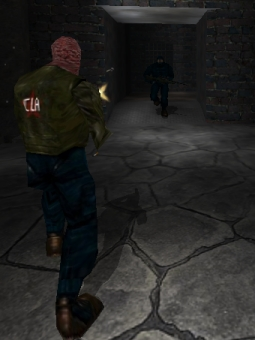
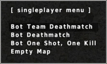
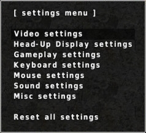

The basics
The game objectives of AssaultCube are simple and straightforward:
- Find the enemy.
- Frag or gib the enemy.
- REPEAT!
There are also flag-based modes, which have other, more exciting objectives.
Controls
After knowing the controls, most things in AssaultCube are relatively straightforward. Press W to move forwards and then move your mouse around to change directions.
Left-click when aimed at an enemy to attack them.
Below is a list of all the other controls (map editing controls are here).
You can also assign custom keys to specific weapons by using the keybinding menu in-game. This can be found by pressing ESC and then navigating to: Settings ⇒ Input controls.
| Control | Function | Control | Function | |
| ESC | Main menu | Left mouse click | Attack | |
| W | Move forward | Right mouse click |
Quick nade throw
(scope-in when using the sniper rifle) |
|
| S | Move backwards | |||
| A | Move left | Mousewheel scroll | Cycle through weapons | |
| D | Move right | Center mouse click | Knife | |
| Space bar | Jump | 1 | Primary weapon | |
| Left SHIFT | Crouch | 2 | Pistol | |
| B | Change weapon menu | 3 | Grenades (if available) | |
| R | Reload | 4 | Knife | |
| G | Quick grenade throw | F1 | Vote yes | |
| Left ALT | Mini-map | F2 | Vote no | |
| TAB | Scoreboard | F10 | Download last recorded server demo | |
| T | Chat / Console | F11 | Extend the console size | |
| Y | Team-chat | F12 | Generate screenshot | |
| V | Voice-com menu | (Keypad) - | Scroll up through console messages | |
| Backspace | Drop the flag | (Keypad) + | Scroll down through console messages |
Joining a multiplayer game
Press ESC and choose Multiplayer ⇒ Join a server.
The masterserver will be queried and provide you with a list of servers, like the image above. This list of servers then gets saved in config/servers.cfg for next time. If the console says "master server not replying", then that means your client failed to download the list of servers to play upon, and you will need to click on "Force serverlist update" until it updates.
If you wish, you can sort the server browser using your left/right keys. Press F1 in this menu to see other available options.
Alternatively, you can connect to a server directly by using the Custom connect menu and then enter a valid IP or DNS name of a server & the port number (and optionally a password, if the server uses one).
Note: Although the AssaultCube game engine is open source, you are warned that if you make
gameplay-affecting modifications to your client, and then connect to a public server, you could
be banned from servers and/or the game's
master server. Remember that when you play online, you are playing against other humans, not
bots, and they would like you to play fair.
DO NOT CHEAT IN PUBLIC SERVERS.
|

The single-player menu. |
|

The settings menu. |

The weapons menu. |
Starting a single-player game
Starting a single-player game is simple. Press ESC, navigate to Singleplayer, then choose the mode, bot skill, amount of enemies and the map. Then, a game with computer-bot enemies will start immediately.
Changing settings
Most important setting changes can actually be changed from within the menus. So, press ESC and then Settings. There are many important settings in this menu that can be changed, including changing your name and team. Look in there for what you need.
There are other settings which can't be found inside the menu. These settings can be changed via the console. Check out the reference to find out about those settings and how they can be changed.
To find out how settings are saved, read here.
Choosing a weapon
To select a primary weapon, press B to show the weapon menu. Through this menu you'll be able to choose any of the five primary weapons.
You will then receive the weapon when you next respawn. If you want the weapon straight away, type /suicide
You can select between your primary weapon, pistol/akimbo, grenade or knife by selecting them using the keys 1-4, or by scrolling through them with your mouse. Pressing G or right click will throw a grenade.
Quick nade throw: If you want to throw a grenade and then quickly switch back to your normal weapon, press and hold the right mouse button and then let go to throw the grenade. After throwing the grenade (if you clicked and held it) then it will switch back to your normal weapon.

Orientation
If you can't find your way around the map, you can use the mini-map in the top-right corner of your screen (see right). Also, a bigger version of the map can be shown by pressing ALT.
To learn more about the mini-map, see here.
Talking/Chatting
If you want to say something to other players, it's very simple. Just press T to bring up the console where you can type whatever you would like.
If you want to make sure what you say is said only to the players on your team (if in a team mode), then press Y. This will bring up the console with a % sign in-front of it. The % sign is what is needed in front of ANYTHING you say to make it be seen ONLY by your team.
Gibs
"Gibs" are a great way of defeating another player. If you want to gain many points quickly, this is the way to go about it. Deaths by gib count for 2 frags! Gibs are created by: Sniper rifle headshots and deaths from knife slashes.
Although they don't count for extra frags, it should be noted that death by grenade blasts and blank-range shotgun create the same messy effect.
Voting
Voting can be used to do many various things in Multiplayer, such as changing mode/map, forcing a team change, changing mastermode, kicking or banning a player, setting autoteam and removing bans.
You can make these votes through the menus in-game. When connected, press ESC and click on Set mode/map. This can also be done through commands if you prefer, example: typing the command /ctf ac_mines would start a vote for ac_mines in CTF mode. Note: There are time limits between votes.
Use F1 to vote for votes that appear at the bottom left of your screen and use F2 to vote against them.
Spectating
Once fragged, you can spectate a game simply by pressing the space bar. Using your mouse to scroll will change the player you are spectating. Pressing the space bar will scroll through 3 different spectate modes: Normal spectate, follow-player or follow with ghost.
You can also spectate by pressing ESC in-game and clicking on "Change to spectate mode". This will cost you 1 death if you're still alive at the time.
Voice-com
Voice-coms are a nifty way to quickly communicate common phrases to other players. To use the voice-coms during a multiplayer game, press V. Then, using numbers, select the voice-com you would like to say.
Screenshots
Most players use screenshots as a way of keeping a record of their scores. If you only need screenshots to do this, it's recommended to turn on "Auto-screenshot", which automatically takes a screenshot during intermission (while the scoreboard is showing) of every game you play. This can be done in the Settings ⇒ Misc settings menu.
You can also adjust the image quality of these screenshots through this menu.
You can create a screenshot at anytime during the game by pressing F12 or by typing /screenshot.
Demos
Demos are a little bit like video recordings of the game, except what they really do is record all the data sent/received in the game so it can be replayed later (it is not a video file!). Demos are recorded on THE SERVER only (as recording demos locally causes issues).
Demos are recorded on all servers by default. However, if they've been disabled on the server you're on, you can only get them recorded if you are an ADMIN and have the server's admin password.
In these cases, to record a demo, take admin and use the demo menu (Press ESC in-game and go to Demos). The next match, a recording will be made and you can vote to stop recording the demo at any time through: Demos ⇒ Stop recording.
When demos are recorded, you'll be prompted to download it by pressing F10 and if pressed, your demo will be downloaded.
If you would like to download a previous demo that's still located on the server, you can use: Demos ⇒ Download demos in the menus.
Playing and sending custom maps
If you want to play a custom map online, then there are three requirements to get it running:
- Make a quality map - If your map does not fulfill the default quality requirements, after sending it to the server, your map will be rejected, with an explanation as to what quality requirement hasn't been fulfilled.
- Start the map - This is done by voting for the map and mode to be played. This can be done through the menus as shown in voting.
-
Send the map - This is done by typing /sendmap. This will send the map
file stored on your computer to all the other players so that you can properly play the map.
If the map has a config file, it will send that also.
Note: You or the server MUST already have the map file to be able to play a custom map!
Reset binds / Reset configs
If you would like to reset all your controls back to the defaults, you can type the /resetbinds command. Alternatively, you can find this inside Settings ⇒ Keyboard settings by choosing Reset keybinds to default settings....
If you would like to be able to reset all settings AND controls to default values, you can do this easily by typing /resetcfg 1. You can also do this through the Settings menu by selecting Reset all settings.
"resetcfg" deletes the saved.cfg and init.cfg files which contains all user-chosen settings for AssaultCube. You will need to restart AssaultCube for this to take effect.
In-game reference
If you would like to see a reference of commands during the game, you can access these through the menu by going through: Help ⇒ AssaultCube reference.
If you know the command you would like to use, but just want some information about it, you can type the command into AssaultCube and information about this command will be displayed. You can disable this documentation reference if you want by pressing F1 when it is shown.
You can also search the reference through: Help ⇒ Search the reference.